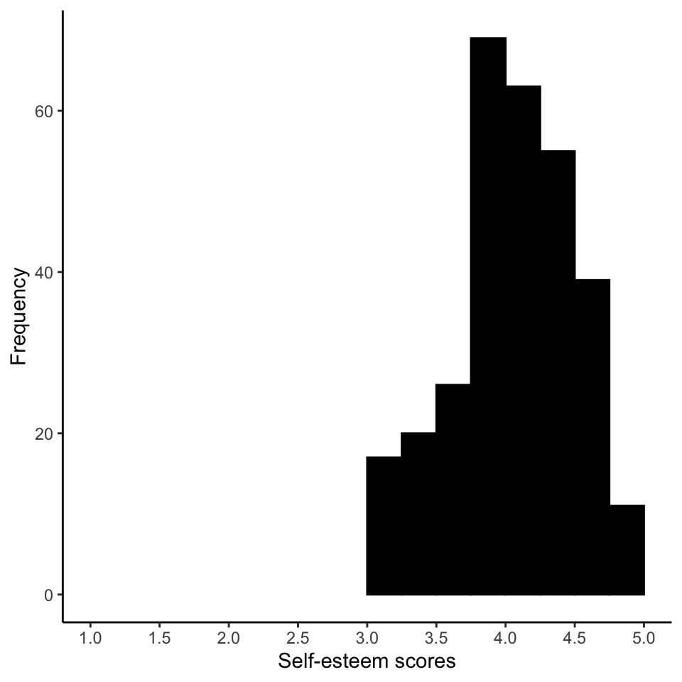

Chapter 8 Week 9 Friday Workshop
8.1 Required Packages
The data files below are used in this chapter. The files are available at: https://github.com/dstanley4/psyc3250bookdown
| Required Data |
|---|
| data_survey.csv |
The following CRAN packages must be installed:
| Required CRAN Packages |
|---|
| tidyverse |
| janitor |
| psyc |
Important Note: You should NOT use library(psych) at any point! There are major conflicts between the psych package and the tidyverse. We will access the psych package commands by preceding each command with psych:: instead of using library(psych).
8.2 Goals
The primary focus of this workshop is learning how to conduct an item analysis. An understanding of the process used for item analysis is covered in a separate lecture - that you need not have had prior to this workshop.
8.3 Create a project
Create a project with a name of your choosing. Next, download the data file data_survey.csv from Courselink and save it on your computer’s hard drive in the project directory.
8.4 Activate the packages
Begin your script by activating the required packages using the library command. At this point we only activate two of the three packages. Note we do not call the library command for psych, doing so would create conflicts between the psych and tidyverse packages. Instead we preceed all calls to psych package commands with psych::
library(tidyverse)
library(janitor)8.5 Load your data raw data
Make sure you have created a PROJECT as described in class previously.
We load the data below.
raw_data_survey <- read_csv(file = "data_survey.csv", na =c("", "NA", "-999"))In the command above command: na = c(““,”NA”,“-999”) tells the computer to interpret 1) missing values, 2) NA, and 3) -999 as missing values, respectively, when reading the data. Your initial raw data will be stored in a spreadsheet called analytic_data_survey
8.6 Make analytic data
Then we create a clean version of the data:
analytic_data_survey <- raw_data_survey %>%
remove_empty("rows") %>%
remove_empty("cols") %>%
clean_names()Your clean data will be stored in a spreadsheet called analytic_data_survey.
Check out the analytic_data_survey below:
glimpse(analytic_data_survey)## Rows: 300
## Columns: 10
## $ esteem1_likert5 <dbl> 3, 4, 4, 3, 3, 3, 3, 4, 4, 4, 3, 4, NA, NA, 3, 3, 3, 3, 3, NA, 5, NA, 3…
## $ esteem2_likert5 <dbl> 2, 3, 3, 2, 2, 3, 2, 3, 3, 3, 2, 2, NA, 3, 2, 2, 2, 2, 3, 2, 3, 2, 2, 3…
## $ esteem3_likert5 <dbl> 4, 4, 4, 3, 4, 4, NA, 4, 4, 3, 4, 4, 4, NA, 4, NA, NA, 3, 4, 4, 4, 4, N…
## $ esteem4_likert5 <dbl> 3, 4, 4, 3, 4, 4, 4, 4, 3, 4, NA, 4, 3, 3, 4, NA, 3, 3, 4, 3, 4, 4, 4, …
## $ esteem5_likert5 <dbl> 4, 4, 4, 4, 4, NA, NA, 4, 4, 4, 3, 4, 4, 3, 3, NA, 3, 3, NA, 4, 4, 3, 3…
## $ esteem6_likert5 <dbl> 3, 5, 4, 3, 3, 3, 3, 5, 3, 3, 3, 4, 4, 3, 3, 4, 3, 3, 3, 3, 4, 3, 3, 4,…
## $ esteem7_likert5rev <dbl> 1, 1, 1, NA, 1, 1, 2, 1, 2, 2, 3, 1, 3, 2, 1, 1, 2, 3, 1, 2, NA, 3, 1, …
## $ esteem8_likert5 <dbl> 3, NA, 3, 3, 3, 3, 3, 3, 3, 3, 3, 3, 3, 2, 3, 3, 2, 2, 3, 3, 3, NA, NA,…
## $ esteem9_likert5 <dbl> NA, 5, 5, 4, 4, 4, 4, 5, NA, 4, NA, 5, 4, 4, 4, 5, 4, 3, 4, 4, 5, 3, 5,…
## $ esteem10_likert5 <dbl> 5, NA, 5, 4, 5, 4, 4, 5, 5, 5, 4, NA, 4, 5, 4, 4, 4, 4, 5, 4, 5, 4, NA,…You can tell just by looking at this item names that a 5-point Likert scale was used and that item 7 was reverse-keyed.
8.7 Flipping responses to reverse-key items
Inspecting the above output you see the esteem7_liker5rev item is reverse-keyed. As well, you can tell that this data set the items have been scored using the values 1 to 5 via a 5-point Likert-type rating scale.
The way you deal with reverse-keyed items depends on how you scored them. Imagine you had a different 5-point scale. You could have scored the scale with the values 1, 2, 3, 4, and 5. Alternatively, you could have scored the scale with the values 0, 1, 2, 3, and 4. The mathematical approach you use to correcting reverse-keyed items depends upon whether the 5-point scale starts with 1 or 0.
In this example, we scored the data using the value 1 to 5; so that is the approach illustrated here.
In this data file all the reverse-keyed items (only one) were identified with the suffix “_likert5rev” in the column names. This suffix indicates the item was reverse keyed and that the original scale used the response points 1 to 5. We can see using the glimpse() command below that there was only one reverse-keyed item.
analytic_data_survey %>%
glimpse()## Rows: 300
## Columns: 10
## $ esteem1_likert5 <dbl> 3, 4, 4, 3, 3, 3, 3, 4, 4, 4, 3, 4, NA, NA, 3, 3, 3, 3, 3, NA, 5, NA, 3…
## $ esteem2_likert5 <dbl> 2, 3, 3, 2, 2, 3, 2, 3, 3, 3, 2, 2, NA, 3, 2, 2, 2, 2, 3, 2, 3, 2, 2, 3…
## $ esteem3_likert5 <dbl> 4, 4, 4, 3, 4, 4, NA, 4, 4, 3, 4, 4, 4, NA, 4, NA, NA, 3, 4, 4, 4, 4, N…
## $ esteem4_likert5 <dbl> 3, 4, 4, 3, 4, 4, 4, 4, 3, 4, NA, 4, 3, 3, 4, NA, 3, 3, 4, 3, 4, 4, 4, …
## $ esteem5_likert5 <dbl> 4, 4, 4, 4, 4, NA, NA, 4, 4, 4, 3, 4, 4, 3, 3, NA, 3, 3, NA, 4, 4, 3, 3…
## $ esteem6_likert5 <dbl> 3, 5, 4, 3, 3, 3, 3, 5, 3, 3, 3, 4, 4, 3, 3, 4, 3, 3, 3, 3, 4, 3, 3, 4,…
## $ esteem7_likert5rev <dbl> 1, 1, 1, NA, 1, 1, 2, 1, 2, 2, 3, 1, 3, 2, 1, 1, 2, 3, 1, 2, NA, 3, 1, …
## $ esteem8_likert5 <dbl> 3, NA, 3, 3, 3, 3, 3, 3, 3, 3, 3, 3, 3, 2, 3, 3, 2, 2, 3, 3, 3, NA, NA,…
## $ esteem9_likert5 <dbl> NA, 5, 5, 4, 4, 4, 4, 5, NA, 4, NA, 5, 4, 4, 4, 5, 4, 3, 4, 4, 5, 3, 5,…
## $ esteem10_likert5 <dbl> 5, NA, 5, 4, 5, 4, 4, 5, 5, 5, 4, NA, 4, 5, 4, 4, 4, 4, 5, 4, 5, 4, NA,…To correct a reverse-keyed item where the lowest possible rating is 1 (i.e, 1 on a 1 to 5 scale), we simply subtract all the scores from a value one more than the highest point possible on the scale (i.e., one more than 5). For example, if a 1 to 5 response scale was used we subtract each response from 6 to obtain the recoded value.
| Original value | Math | Recoded value |
|---|---|---|
| 1 | 6 - 1 | 5 |
| 2 | 6 - 2 | 4 |
| 3 | 6 - 3 | 2 |
| 4 | 6 - 4 | 1 |
| 5 | 6 - 5 | 1 |
** Thus, for we need to subtract every value in the esteem7_likert5rev column from 6 to flip the reverse-key response to the correct direction. You can see the code that does this below (but don’t type it yet).
# Do not type into your script.
# This is PART of a command not a full command.
analytic_data_survey <- analytic_data_survey %>%
mutate(6 - across(.cols = ends_with("_likert5rev")) )The code above is general in nature and will perform the subtraction for any column that end in “_likert7rev” in our case there is only one column that will be affect. The problem with the code above though is that you have the wrong column name. You have flipped the values in the column so that are not reverse-keyed anymore – but the column name indicates that you have reverse-keyed responses. So you need to add the code below to change the column name.
# Do not type into your script.
# This is PART of a command not a full command.
rename_with(.fn = str_replace,
.cols = ends_with("_likert5rev"),
pattern = "_likert5rev",
replacement = "_likert5")Let’s begin by looking at the first few rows of your data set:
glimpse(analytic_data_survey)## Rows: 300
## Columns: 10
## $ esteem1_likert5 <dbl> 3, 4, 4, 3, 3, 3, 3, 4, 4, 4, 3, 4, NA, NA, 3, 3, 3, 3, 3, NA, 5, NA, 3…
## $ esteem2_likert5 <dbl> 2, 3, 3, 2, 2, 3, 2, 3, 3, 3, 2, 2, NA, 3, 2, 2, 2, 2, 3, 2, 3, 2, 2, 3…
## $ esteem3_likert5 <dbl> 4, 4, 4, 3, 4, 4, NA, 4, 4, 3, 4, 4, 4, NA, 4, NA, NA, 3, 4, 4, 4, 4, N…
## $ esteem4_likert5 <dbl> 3, 4, 4, 3, 4, 4, 4, 4, 3, 4, NA, 4, 3, 3, 4, NA, 3, 3, 4, 3, 4, 4, 4, …
## $ esteem5_likert5 <dbl> 4, 4, 4, 4, 4, NA, NA, 4, 4, 4, 3, 4, 4, 3, 3, NA, 3, 3, NA, 4, 4, 3, 3…
## $ esteem6_likert5 <dbl> 3, 5, 4, 3, 3, 3, 3, 5, 3, 3, 3, 4, 4, 3, 3, 4, 3, 3, 3, 3, 4, 3, 3, 4,…
## $ esteem7_likert5rev <dbl> 1, 1, 1, NA, 1, 1, 2, 1, 2, 2, 3, 1, 3, 2, 1, 1, 2, 3, 1, 2, NA, 3, 1, …
## $ esteem8_likert5 <dbl> 3, NA, 3, 3, 3, 3, 3, 3, 3, 3, 3, 3, 3, 2, 3, 3, 2, 2, 3, 3, 3, NA, NA,…
## $ esteem9_likert5 <dbl> NA, 5, 5, 4, 4, 4, 4, 5, NA, 4, NA, 5, 4, 4, 4, 5, 4, 3, 4, 4, 5, 3, 5,…
## $ esteem10_likert5 <dbl> 5, NA, 5, 4, 5, 4, 4, 5, 5, 5, 4, NA, 4, 5, 4, 4, 4, 4, 5, 4, 5, 4, NA,…You can see the first three values of the esteem7 column are 1, 1, and 1.
Now let fix the column with code below - which you should put in your script.
# Place this code in your script
analytic_data_survey <- analytic_data_survey %>%
mutate(6 - across(.cols = ends_with("_likert5rev")) ) %>%
rename_with(.fn = str_replace,
.cols = ends_with("_likert5rev"),
pattern = "_likert5rev",
replacement = "_likert5")After you put that above code in your script. Add another head() command:
## Rows: 300
## Columns: 10
## $ esteem1_likert5 <dbl> 3, 4, 4, 3, 3, 3, 3, 4, 4, 4, 3, 4, NA, NA, 3, 3, 3, 3, 3, NA, 5, NA, 3, …
## $ esteem2_likert5 <dbl> 2, 3, 3, 2, 2, 3, 2, 3, 3, 3, 2, 2, NA, 3, 2, 2, 2, 2, 3, 2, 3, 2, 2, 3, …
## $ esteem3_likert5 <dbl> 4, 4, 4, 3, 4, 4, NA, 4, 4, 3, 4, 4, 4, NA, 4, NA, NA, 3, 4, 4, 4, 4, NA,…
## $ esteem4_likert5 <dbl> 3, 4, 4, 3, 4, 4, 4, 4, 3, 4, NA, 4, 3, 3, 4, NA, 3, 3, 4, 3, 4, 4, 4, 4,…
## $ esteem5_likert5 <dbl> 4, 4, 4, 4, 4, NA, NA, 4, 4, 4, 3, 4, 4, 3, 3, NA, 3, 3, NA, 4, 4, 3, 3, …
## $ esteem6_likert5 <dbl> 3, 5, 4, 3, 3, 3, 3, 5, 3, 3, 3, 4, 4, 3, 3, 4, 3, 3, 3, 3, 4, 3, 3, 4, 3…
## $ esteem7_likert5 <dbl> 5, 5, 5, NA, 5, 5, 4, 5, 4, 4, 3, 5, 3, 4, 5, 5, 4, 3, 5, 4, NA, 3, 5, 5,…
## $ esteem8_likert5 <dbl> 3, NA, 3, 3, 3, 3, 3, 3, 3, 3, 3, 3, 3, 2, 3, 3, 2, 2, 3, 3, 3, NA, NA, 3…
## $ esteem9_likert5 <dbl> NA, 5, 5, 4, 4, 4, 4, 5, NA, 4, NA, 5, 4, 4, 4, 5, 4, 3, 4, 4, 5, 3, 5, 4…
## $ esteem10_likert5 <dbl> 5, NA, 5, 4, 5, 4, 4, 5, 5, 5, 4, NA, 4, 5, 4, 4, 4, 4, 5, 4, 5, 4, NA, 5…Let’s run your full script. Go to the menu Session > Restart R. The click the Source with Echo button to run full script.
glimpse(analytic_data_survey)## Rows: 300
## Columns: 10
## $ esteem1_likert5 <dbl> 3, 4, 4, 3, 3, 3, 3, 4, 4, 4, 3, 4, NA, NA, 3, 3, 3, 3, 3, NA, 5, NA, 3, …
## $ esteem2_likert5 <dbl> 2, 3, 3, 2, 2, 3, 2, 3, 3, 3, 2, 2, NA, 3, 2, 2, 2, 2, 3, 2, 3, 2, 2, 3, …
## $ esteem3_likert5 <dbl> 4, 4, 4, 3, 4, 4, NA, 4, 4, 3, 4, 4, 4, NA, 4, NA, NA, 3, 4, 4, 4, 4, NA,…
## $ esteem4_likert5 <dbl> 3, 4, 4, 3, 4, 4, 4, 4, 3, 4, NA, 4, 3, 3, 4, NA, 3, 3, 4, 3, 4, 4, 4, 4,…
## $ esteem5_likert5 <dbl> 4, 4, 4, 4, 4, NA, NA, 4, 4, 4, 3, 4, 4, 3, 3, NA, 3, 3, NA, 4, 4, 3, 3, …
## $ esteem6_likert5 <dbl> 3, 5, 4, 3, 3, 3, 3, 5, 3, 3, 3, 4, 4, 3, 3, 4, 3, 3, 3, 3, 4, 3, 3, 4, 3…
## $ esteem7_likert5 <dbl> 5, 5, 5, NA, 5, 5, 4, 5, 4, 4, 3, 5, 3, 4, 5, 5, 4, 3, 5, 4, NA, 3, 5, 5,…
## $ esteem8_likert5 <dbl> 3, NA, 3, 3, 3, 3, 3, 3, 3, 3, 3, 3, 3, 2, 3, 3, 2, 2, 3, 3, 3, NA, NA, 3…
## $ esteem9_likert5 <dbl> NA, 5, 5, 4, 4, 4, 4, 5, NA, 4, NA, 5, 4, 4, 4, 5, 4, 3, 4, 4, 5, 3, 5, 4…
## $ esteem10_likert5 <dbl> 5, NA, 5, 4, 5, 4, 4, 5, 5, 5, 4, NA, 4, 5, 4, 4, 4, 4, 5, 4, 5, 4, NA, 5…When you see the output fo the second head() command you can see that the esteem7_likert5rev column has turned into esteem7_likert5 (with no rev). You can also see the first few values of this column are 5, 5, and 5. That is, you can see the values in the column have been flipped.
Congratulations you’ve finished fixing the reverse-key item in your data set.
8.8 Item descriptive statistics
If desired, you can obtain the descriptive statistics for each item and correlations among items.
Descriptive statistics can obtained with the describe command from the psych package:
desired_descriptives <- list(
mean = ~mean(.x, na.rm = TRUE)
)
analytic_data_survey %>%
summarise(across(.cols = starts_with("esteem"),
.fns = desired_descriptives)) %>%
as.data.frame() %>%
t()## [,1]
## esteem1_likert5_mean 3.39
## esteem2_likert5_mean 2.35
## esteem3_likert5_mean 3.96
## esteem4_likert5_mean 3.54
## esteem5_likert5_mean 3.78
## esteem6_likert5_mean 3.34
## esteem7_likert5_mean 4.49
## esteem8_likert5_mean 2.84
## esteem9_likert5_mean 4.29
## esteem10_likert5_mean 4.578.9 Item correlations
A correlation matrix can be obtained using the command below.
cor.matrix <- cor(analytic_data_survey, use = "pairwise.complete.obs")
round(cor.matrix, 2)## esteem1_likert5 esteem2_likert5 esteem3_likert5 esteem4_likert5 esteem5_likert5
## esteem1_likert5 1.00 0.31 0.20 0.34 0.34
## esteem2_likert5 0.31 1.00 0.24 0.22 0.31
## esteem3_likert5 0.20 0.24 1.00 0.28 0.30
## esteem4_likert5 0.34 0.22 0.28 1.00 0.29
## esteem5_likert5 0.34 0.31 0.30 0.29 1.00
## esteem6_likert5 0.33 0.32 0.23 0.34 0.39
## esteem7_likert5 0.32 0.29 0.43 0.37 0.41
## esteem8_likert5 0.28 0.29 0.38 0.32 0.41
## esteem9_likert5 0.38 0.36 0.35 0.32 0.43
## esteem10_likert5 0.31 0.34 0.28 0.19 0.40
## esteem6_likert5 esteem7_likert5 esteem8_likert5 esteem9_likert5 esteem10_likert5
## esteem1_likert5 0.33 0.32 0.28 0.38 0.31
## esteem2_likert5 0.32 0.29 0.29 0.36 0.34
## esteem3_likert5 0.23 0.43 0.38 0.35 0.28
## esteem4_likert5 0.34 0.37 0.32 0.32 0.19
## esteem5_likert5 0.39 0.41 0.41 0.43 0.40
## esteem6_likert5 1.00 0.32 0.24 0.34 0.25
## esteem7_likert5 0.32 1.00 0.44 0.42 0.39
## esteem8_likert5 0.24 0.44 1.00 0.51 0.35
## esteem9_likert5 0.34 0.42 0.51 1.00 0.36
## esteem10_likert5 0.25 0.39 0.35 0.36 1.00The above matrix can be hard to read so it’s easier to use the commands below to see the matrix. The column/row names are dropped but the matrix is easier to read.
temp_matrix <- analytic_data_survey
names(temp_matrix) <- NULL
cor.matrix <- cor(temp_matrix,
use = "pairwise.complete.obs")
round(cor.matrix, 2)## [,1] [,2] [,3] [,4] [,5] [,6] [,7] [,8] [,9] [,10]
## [1,] 1.00 0.31 0.20 0.34 0.34 0.33 0.32 0.28 0.38 0.31
## [2,] 0.31 1.00 0.24 0.22 0.31 0.32 0.29 0.29 0.36 0.34
## [3,] 0.20 0.24 1.00 0.28 0.30 0.23 0.43 0.38 0.35 0.28
## [4,] 0.34 0.22 0.28 1.00 0.29 0.34 0.37 0.32 0.32 0.19
## [5,] 0.34 0.31 0.30 0.29 1.00 0.39 0.41 0.41 0.43 0.40
## [6,] 0.33 0.32 0.23 0.34 0.39 1.00 0.32 0.24 0.34 0.25
## [7,] 0.32 0.29 0.43 0.37 0.41 0.32 1.00 0.44 0.42 0.39
## [8,] 0.28 0.29 0.38 0.32 0.41 0.24 0.44 1.00 0.51 0.35
## [9,] 0.38 0.36 0.35 0.32 0.43 0.34 0.42 0.51 1.00 0.36
## [10,] 0.31 0.34 0.28 0.19 0.40 0.25 0.39 0.35 0.36 1.008.10 Initial Cronbach’s Alpha
We now analyze the items in analytic_data_survey using the command below. This command will give us the Cronbach’s alpha (with confidence interval) and most, but not all, of the item level statistics we need.
reliabilty_results <- psych::alpha( as.data.frame(analytic_data_survey),
check.keys = FALSE)
print(reliabilty_results$total)## raw_alpha std.alpha G6(smc) average_r S/N ase mean sd median_r
## 0.828 0.833 0.828 0.333 5 0.0143 3.66 0.339 0.328We can see from the output above that Cronbach’s \(\alpha\) = .83, 95% CI[.80, .86]. You look at the raw alpha output to obtain this value (.83).
This is good. But imagine we were in a scenario where we couldn’t use all 10 items. We are only allowed to use 5-items. This constraint is placed on us because there are so many measures in the survey they have to limit the survey to only 5-items per measure. How do we go about picking the best 5-items?
8.11 WARNINGS
Note that you may get warnings like the two below. Don’t worry about these warnings. They just indicate poor items.
8.11.1 Warning 1
Negative item total correlation. This warning will sometimes occur. It simply warns you that the item in question looks like it is reverse-keyed but you forgot to reverse it. However, we fixed all reverse key items before this step - so this simply indicates a poor item. That is, a poor item with a negative corrected item-total correlation.
In psych::alpha(items, check.keys = F) :
Item = myitem_likert7rev had no variance and was deleted but still is counted in the score8.11.2 Warning 2
Item SD of zero. This warning will also sometimes occur. It simply warns you that for the item in question all participants scored the same. That is, the warning indicates, a poor item with a standard deviation of zero.
In psych::alpha(items, check.keys = F) :
Some items were negatively correlated with the total scale and probably Both of these warnings will be dealt with when we calculate the item-reliability index below.
8.12 Create “Item-Reliablity Index”
To determine the best 5-items we need to look at the item-reliability index for each item. The item-reliabilty index is based on both the corrected-item-total correlation and the standard deviation of scores on the item. Consequently, an item with a high item-reliability index presumably has both high standard deviation (it detects differences among people) and a high corrected-item-total correlation (it correlates well with the column average of other items). There are not any specific values we use to interpret item-reliability index because the value of the index depends on the scale of measurement. BUT we do know that higher values on the item-reliability index are better than lower values.
Unfortunately, R doesn’t create the item-reliability index automatically. We can create the item-reliability index using the commands below. The dollar sign in the command below tells R to extract item_stats from within reliability results.
First we extract the item statistics from reliability_results. Notice below sometime use use item_stats and item.stats - make sure you notice the difference.
item_stats <- reliabilty_results$item.stats
print(item_stats)## n raw.r std.r r.cor r.drop mean sd
## esteem1_likert5 276 0.596 0.604 0.536 0.494 3.39 0.538
## esteem2_likert5 272 0.569 0.587 0.513 0.473 2.35 0.479
## esteem3_likert5 269 0.541 0.582 0.511 0.463 3.96 0.375
## esteem4_likert5 285 0.547 0.581 0.509 0.458 3.54 0.499
## esteem5_likert5 265 0.641 0.683 0.640 0.585 3.78 0.474
## esteem6_likert5 275 0.592 0.599 0.532 0.483 3.34 0.512
## esteem7_likert5 273 0.699 0.692 0.653 0.587 4.49 0.607
## esteem8_likert5 272 0.645 0.670 0.629 0.573 2.84 0.365
## esteem9_likert5 265 0.734 0.712 0.679 0.611 4.29 0.705
## esteem10_likert5 276 0.641 0.615 0.553 0.501 4.57 0.614Next, we calculate the item-reliability index. Recall this index is simply the product of the corrected item-total correlation (called r.drop in the output above) and item standard deviation (called sd in the output above).
item_stats$item_reliability_index <- item_stats$r.drop * item_stats$sd
print(item_stats)## n raw.r std.r r.cor r.drop mean sd item_reliability_index
## esteem1_likert5 276 0.596 0.604 0.536 0.494 3.39 0.538 0.266
## esteem2_likert5 272 0.569 0.587 0.513 0.473 2.35 0.479 0.227
## esteem3_likert5 269 0.541 0.582 0.511 0.463 3.96 0.375 0.173
## esteem4_likert5 285 0.547 0.581 0.509 0.458 3.54 0.499 0.229
## esteem5_likert5 265 0.641 0.683 0.640 0.585 3.78 0.474 0.277
## esteem6_likert5 275 0.592 0.599 0.532 0.483 3.34 0.512 0.247
## esteem7_likert5 273 0.699 0.692 0.653 0.587 4.49 0.607 0.357
## esteem8_likert5 272 0.645 0.670 0.629 0.573 2.84 0.365 0.209
## esteem9_likert5 265 0.734 0.712 0.679 0.611 4.29 0.705 0.431
## esteem10_likert5 276 0.641 0.615 0.553 0.501 4.57 0.614 0.308We can now use the item reliability index to see which items are the best.
8.13 Sorting by item-reliability index
In this example, we want a 5-item scale in the end. This means we need to drop 5 items. Which items should we drop? We can simply sort the rows of item_stats by item-reliability index to find out. The good items have a high item-reliability index, the “less good” items have a low item-reliability index. The arrange() command sorts items lowest to highest. But we combine it with the desc() command - for descending. We use the arranges the data frame so the highest item_reliability_index values are the at the top of the data.
item_stats %>%
arrange(desc(item_reliability_index))## n raw.r std.r r.cor r.drop mean sd item_reliability_index
## esteem9_likert5 265 0.734 0.712 0.679 0.611 4.29 0.705 0.431
## esteem7_likert5 273 0.699 0.692 0.653 0.587 4.49 0.607 0.357
## esteem10_likert5 276 0.641 0.615 0.553 0.501 4.57 0.614 0.308
## esteem5_likert5 265 0.641 0.683 0.640 0.585 3.78 0.474 0.277
## esteem1_likert5 276 0.596 0.604 0.536 0.494 3.39 0.538 0.266
## esteem6_likert5 275 0.592 0.599 0.532 0.483 3.34 0.512 0.247
## esteem4_likert5 285 0.547 0.581 0.509 0.458 3.54 0.499 0.229
## esteem2_likert5 272 0.569 0.587 0.513 0.473 2.35 0.479 0.227
## esteem8_likert5 272 0.645 0.670 0.629 0.573 2.84 0.365 0.209
## esteem3_likert5 269 0.541 0.582 0.511 0.463 3.96 0.375 0.173You can see the five best items are esteem9_likert5, esteem7_likert5, esteem10_likert5, esteem5_likert5, and esteem1_likert5. These items are the first five items in the top part of the table (after sorting).
Be sure to also look at the items with a low item reliabilty index. Try to determine why those items had a low index. Was it because of a small standard deviation, a weak corrected item total correlation (r.drop), or a combination of both. That may influence your decision as to which items to retain. (continued on next page)
8.14 Creating the final scale
Select just the items we want:
final_items <- select(analytic_data_survey,
esteem1_likert5,
esteem5_likert5,
esteem7_likert5,
esteem9_likert5,
esteem10_likert5)8.14.1 Calculate Alpha for final scale
Show the final reliability analysis with the code below. Look at the raw alpha to obtain Cronbach’s alpha - the confidence interval is below it.
reliabilty_results <- psych::alpha( as.data.frame(final_items),
check.keys = FALSE)
print(reliabilty_results)##
## Reliability analysis
## Call: psych::alpha(x = as.data.frame(final_items), check.keys = FALSE)
##
## raw_alpha std.alpha G6(smc) average_r S/N ase mean sd median_r
## 0.75 0.75 0.71 0.38 3 0.023 4.1 0.44 0.39
##
## lower alpha upper 95% confidence boundaries
## 0.7 0.75 0.79
##
## Reliability if an item is dropped:
## raw_alpha std.alpha G6(smc) average_r S/N alpha se var.r med.r
## esteem1_likert5 0.72 0.73 0.67 0.40 2.7 0.026 0.00071 0.41
## esteem5_likert5 0.69 0.70 0.63 0.36 2.3 0.028 0.00193 0.37
## esteem7_likert5 0.70 0.71 0.65 0.37 2.4 0.028 0.00186 0.37
## esteem9_likert5 0.69 0.70 0.63 0.36 2.3 0.029 0.00209 0.37
## esteem10_likert5 0.71 0.71 0.65 0.38 2.5 0.027 0.00246 0.40
##
## Item statistics
## n raw.r std.r r.cor r.drop mean sd
## esteem1_likert5 276 0.65 0.66 0.52 0.46 3.4 0.54
## esteem5_likert5 265 0.69 0.73 0.64 0.55 3.8 0.47
## esteem7_likert5 273 0.72 0.71 0.61 0.53 4.5 0.61
## esteem9_likert5 265 0.77 0.73 0.64 0.55 4.3 0.70
## esteem10_likert5 276 0.70 0.70 0.58 0.50 4.6 0.61
##
## Non missing response frequency for each item
## 3 4 5 miss
## esteem1_likert5 0.63 0.34 0.03 0.08
## esteem5_likert5 0.25 0.73 0.03 0.12
## esteem7_likert5 0.06 0.39 0.55 0.09
## esteem9_likert5 0.14 0.42 0.44 0.12
## esteem10_likert5 0.07 0.30 0.63 0.08You can see from this that: \(\alpha\) = .75, 95% CI[.70, .79]. This is lower than all 10 items, but not too bad. Ideally we want alpha to be high, but this is the best we can do with just five items.
8.14.2 Obtain scale scores
What your really want at the end of the process is a single score on self-esteem for each person (i.e., a scale score for each person). Fortunately, when you created the reliabilty_results object above the scale scores were automatically created.
The code below created a new column in analytic_data_survey called self_esteem and the scale scores are placed into this new column.
final_items <- final_items %>%
rowwise() %>%
mutate(self_esteem = mean( c_across(cols = starts_with("esteem")),
na.rm = TRUE)) %>%
ungroup()View the first few scores:
head(final_items)## # A tibble: 6 × 6
## esteem1_likert5 esteem5_likert5 esteem7_likert5 esteem9_likert5 esteem10_likert5 self_esteem
## <dbl> <dbl> <dbl> <dbl> <dbl> <dbl>
## 1 3 4 5 NA 5 4.25
## 2 4 4 5 5 NA 4.5
## 3 4 4 5 5 5 4.6
## 4 3 4 NA 4 4 3.75
## 5 3 4 5 4 5 4.2
## 6 3 NA 5 4 4 4You can see that the self_esteem column contains the average of the selected items (1,5,7,9, and 10). For example, for the first person, their scores were 3 (item 1), 4 (item 5), 5 (item 7 reverse-keyed), and 5 (item 10). There was no score for item 9 it was missing. The average of 3, 4, 5, and 5 is 4.25 (as indicated in the self_esteem column).
8.15 Final scores: Range of values
What is the range of scores on the new measure?
desired_descriptives <- list(
mean = ~mean(.x, na.rm = TRUE),
min = ~min(.x, na.rm = TRUE),
max = ~max(.x, na.rm = TRUE)
)
final_items %>%
summarise(across(.cols = starts_with("self"),
.fns = desired_descriptives)) %>%
as.data.frame() %>%
t()## [,1]
## self_esteem_mean 4.11
## self_esteem_min 3.00
## self_esteem_max 5.008.16 Graphing final scores
An APA like graph can be created with the commands below. Don’t forget these commands only work if you have first used library(tidyverse) as per the previous instructions.
my.graph <- ggplot(data = final_items,
mapping = aes(x = self_esteem)) +
geom_histogram(binwidth = .25, boundary = 0,
color = "black", fill = "black") +
coord_cartesian(xlim = c(1, 5)) +
scale_x_continuous(breaks = seq(1, 5, by = 0.5)) +
xlab("Self-esteem scores") +
ylab("Frequency") +
theme_classic()
print(my.graph)
Important note: In this example the data was on a 1 to 5 scale your data will be on 1 to 7 scale. You will need to adjust the x-axis accordingly for your projects.
8.17 Exporting the graph
Use the Export pull-down menu immediately above the graph to export the graph to a file that you can later import into MS Word. On a Mac you can just drag-and-drop the exported file into MS Word. On MS Word for Windows though use menu commands to Import the graph as a picture.